Candidate List 20260312 Previous Day Next Day Section 1: New Sources (age<1d) Cosmological Afterglow
Section 2: Old (1-5d) sources observed last night placeholder
Section 1: New Afterglow/FBOT Cands Last Night (30)
1. ZTF26aakmdzd (FBOT?) [Back to Top] [Share] [Trigger Swift] [Fritz ] [Lasair ]RA, Dec: 128.15018, -1.7288 8h32m36.04s, -1d-43m-43.67sGalactic (l, b): 226.70696, 21.48659 ext(g-r) = 0.035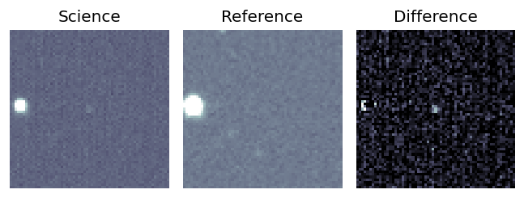
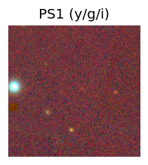
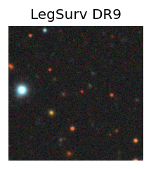
LegacySurvey: 1 sources in 3 arcsec Closest: d = 0.82 arcsec, 208.2 deg (east of north) photoz=0.71 (68% bounds 0.53, 1.13), type=PSF peak abs mag = -22.93 (68% bounds -22.18, -24.17) 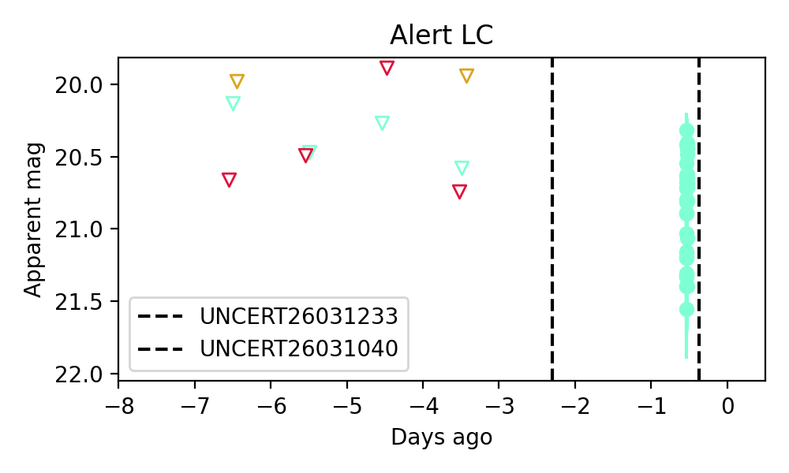
2. ZTF26aakmimq (FBOT?) [Back to Top] [Share] [Trigger Swift] [Fritz ] [Lasair ]RA, Dec: 128.10674, -2.02828 8h32m25.62s, -2d-1m-41.82sGalactic (l, b): 226.96154, 21.29847 ext(g-r) = 0.035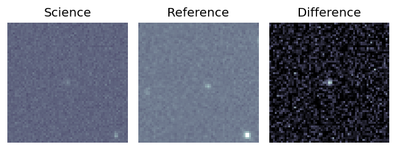
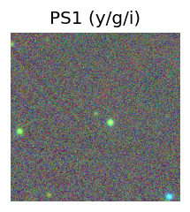
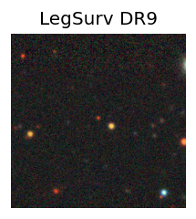
LegacySurvey: 1 sources in 3 arcsec Closest: d = 0.97 arcsec, 2.6 deg (east of north) photoz=0.43 (68% bounds 0.11, 0.69), type=PSF peak abs mag = -21.89 (68% bounds -18.55, -23.13) 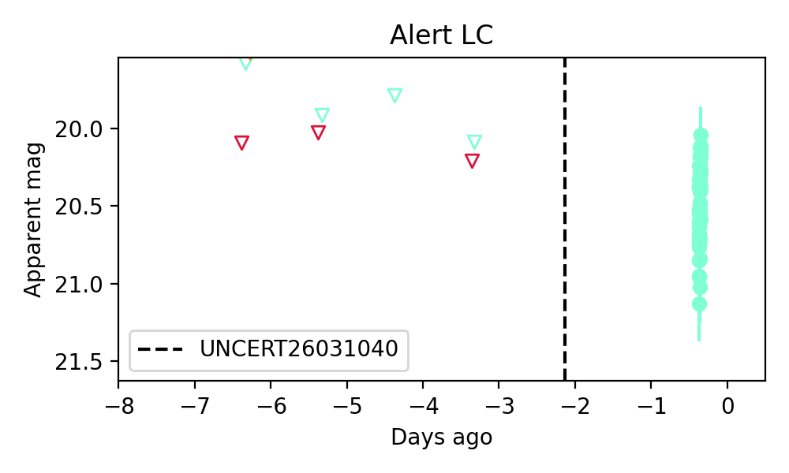
3. ZTF26aakmkwv (FBOT?) [Back to Top] [Share] [Trigger Swift] [Fritz ] [Lasair ]RA, Dec: 126.94535, -1.81852 8h27m46.88s, -1d-49m-6.68sGalactic (l, b): 226.14498, 20.39901 ext(g-r) = 0.032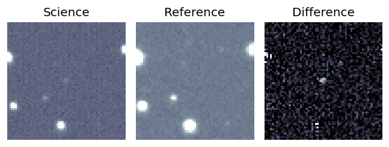
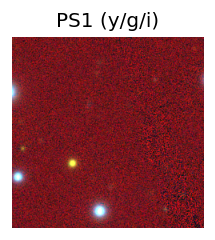
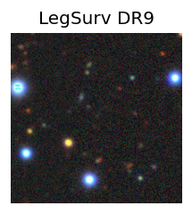
LegacySurvey: 1 sources in 3 arcsec Closest: d = 0.80 arcsec, 335.6 deg (east of north) photoz=0.9 (68% bounds 0.7, 1.18), type=PSF peak abs mag = -23.53 (68% bounds -22.86, -24.25) 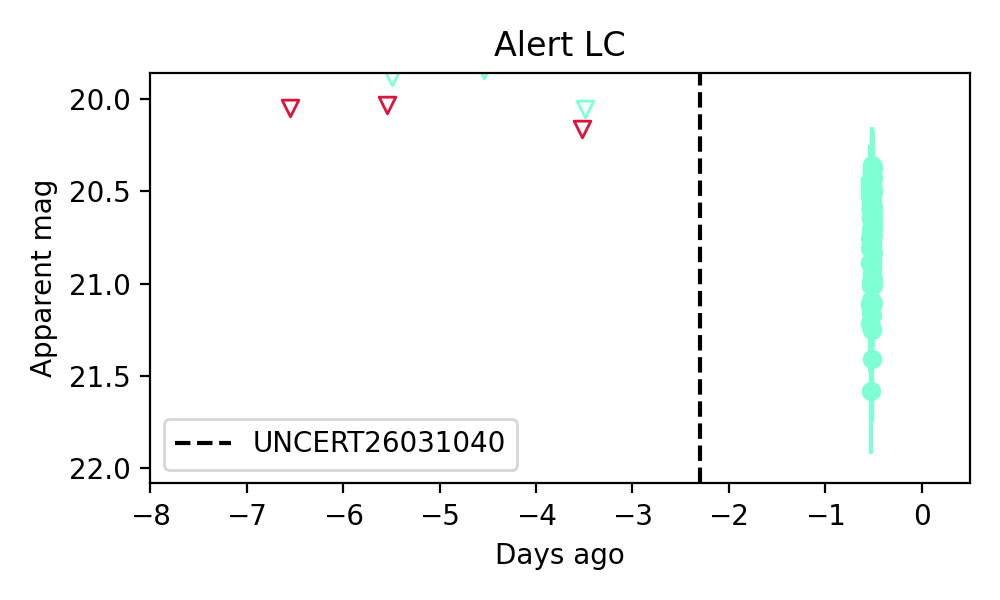
4. ZTF26aakmlin (FBOT?) [Back to Top] [Share] [Trigger Swift] [Fritz ] [Lasair ]RA, Dec: 128.10677, -2.02781 8h32m25.62s, -2d-1m-40.10sGalactic (l, b): 226.96111, 21.29873 ext(g-r) = 0.035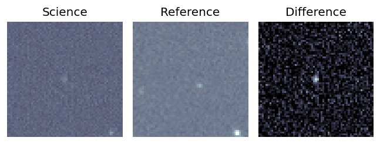
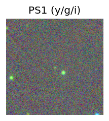
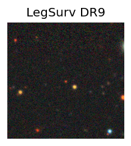
LegacySurvey: 1 sources in 3 arcsec Closest: d = 0.75 arcsec, 183.4 deg (east of north) photoz=0.43 (68% bounds 0.11, 0.69), type=PSF peak abs mag = -21.98 (68% bounds -18.64, -23.22) 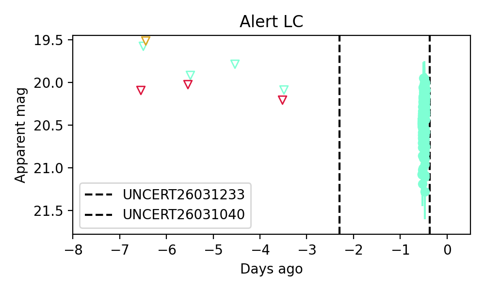
5. ZTF26aakmoyx (FBOT?) [Back to Top] [Share] [Trigger Swift] [Fritz ] [Lasair ]RA, Dec: 127.62806, -2.06537 8h30m30.73s, -2d-3m-55.33sGalactic (l, b): 226.73812, 20.86631 ext(g-r) = 0.03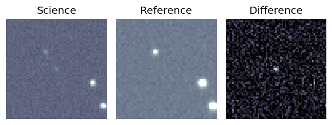
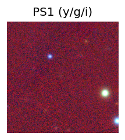
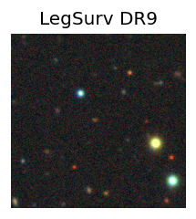
LegacySurvey: 1 sources in 3 arcsec Closest: d = 1.36 arcsec, 82.0 deg (east of north) photoz=0.59 (68% bounds 0.53, 0.68), type=EXP peak abs mag = -22.5 (68% bounds -22.2, -22.88) 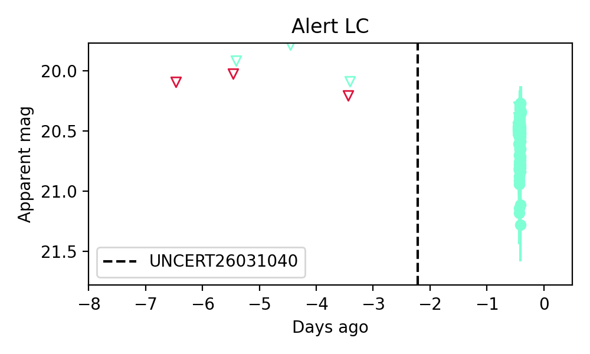
6. ZTF26aakmquf (FBOT?) [Back to Top] [Share] [Trigger Swift] [Fritz ] [Lasair ]RA, Dec: 126.94542, -1.81821 8h27m46.90s, -1d-49m-5.57sGalactic (l, b): 226.14473, 20.39922 ext(g-r) = 0.032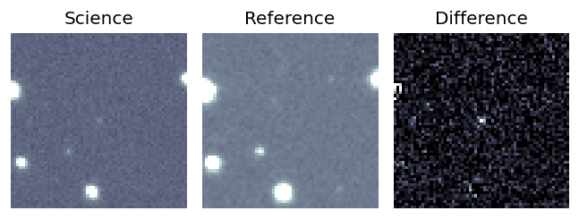
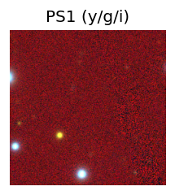
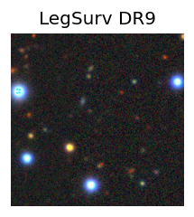
peak abs mag = -20.44 LegacySurvey: 1 sources in 3 arcsec Closest: d = 0.70 arcsec, 237.1 deg (east of north) photoz=0.9 (68% bounds 0.7, 1.18), type=PSF peak abs mag = -23.63 (68% bounds -22.96, -24.36) 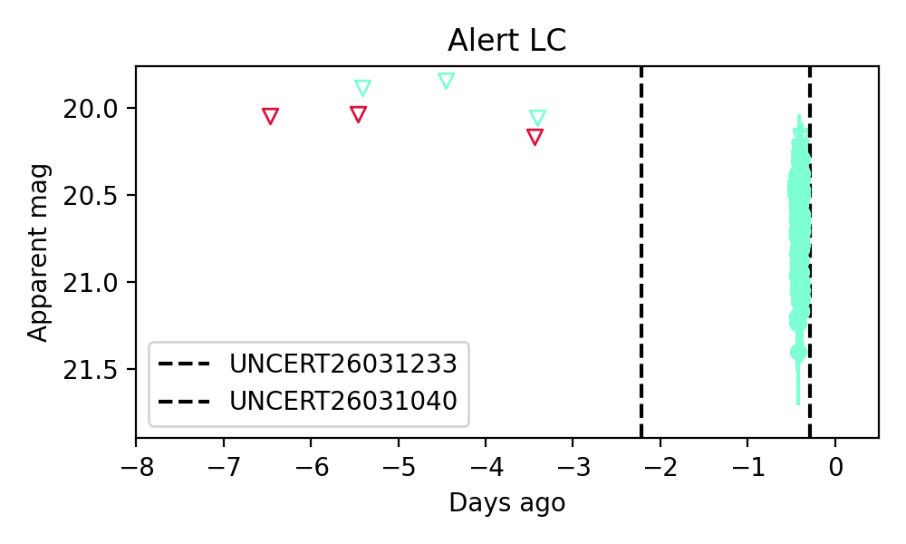
7. ZTF26aakmrah (FBOT?) [Back to Top] [Share] [Trigger Swift] [Fritz ] [Lasair ]RA, Dec: 128.04705, -2.00635 8h32m11.29s, -2d 0m-22.85sGalactic (l, b): 226.90898, 21.25796 ext(g-r) = 0.034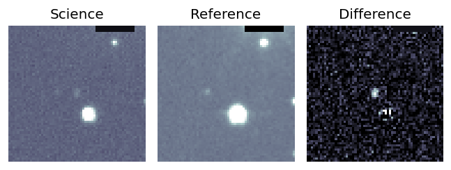
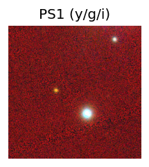
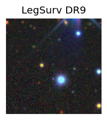
LegacySurvey: 1 sources in 3 arcsec Closest: d = 1.15 arcsec, 30.0 deg (east of north) photoz=0.51 (68% bounds 0.4, 0.68), type=PSF peak abs mag = -22.55 (68% bounds -21.91, -23.29) 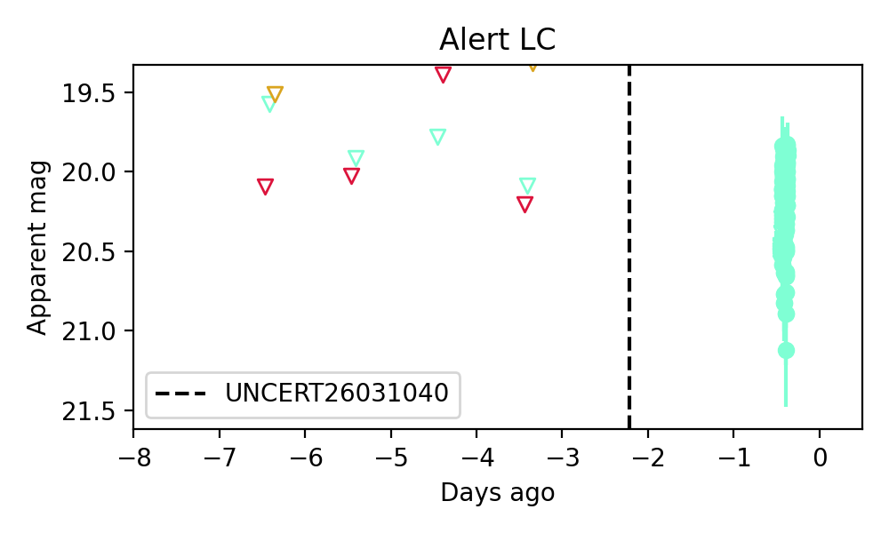
8. ZTF26aakmrbh (Afterglow?) [Back to Top] [Share] [Trigger Swift] [Fritz ] [Lasair ]RA, Dec: 127.97804, -1.90357 8h31m54.73s, -1d-54m-12.86sGalactic (l, b): 226.77644, 21.25002 ext(g-r) = 0.035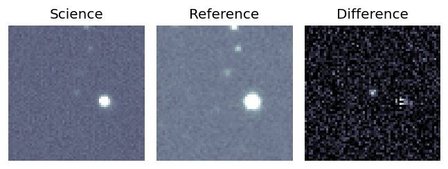
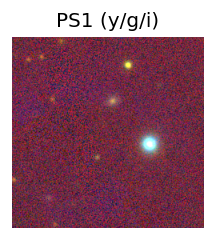
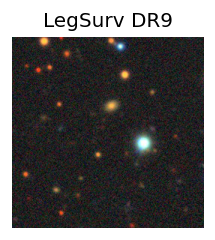
LegacySurvey: 1 sources in 3 arcsec Closest: d = 2.58 arcsec, 47.3 deg (east of north) photoz=0.97 (68% bounds 0.86, 1.13), type=REX peak abs mag = -23.9 (68% bounds -23.58, -24.32) 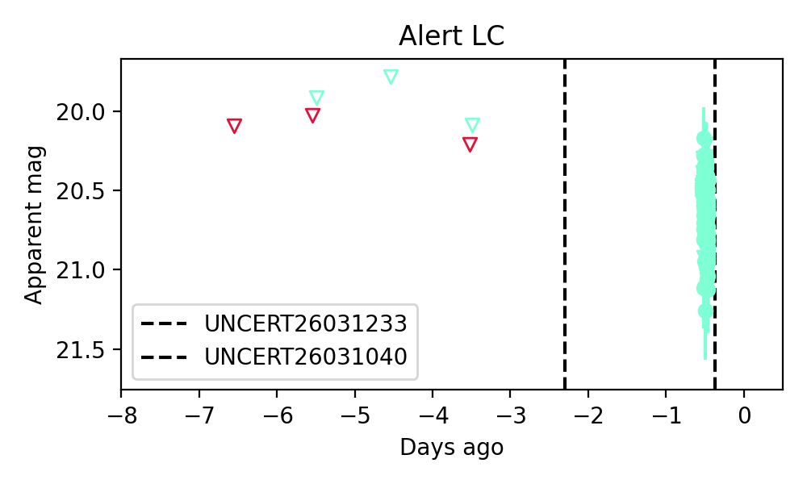
9. ZTF26aakmsvc (Afterglow?) [Back to Top] [Share] [Trigger Swift] [Fritz ] [Lasair ]RA, Dec: 127.12317, -1.8736 8h28m29.56s, -1d-52m-24.96sGalactic (l, b): 226.29058, 20.52555 ext(g-r) = 0.033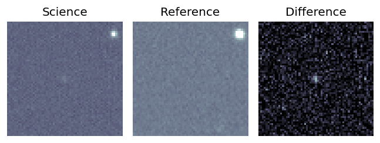
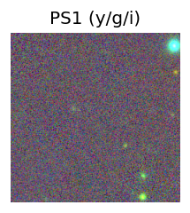
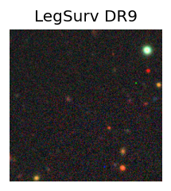
LegacySurvey: 1 sources in 3 arcsec Closest: d = 8.44 arcsec, 71.0 deg (east of north) photoz=0.9 (68% bounds 0.78, 1.01), type=REX peak abs mag = -23.65 (68% bounds -23.26, -23.95) 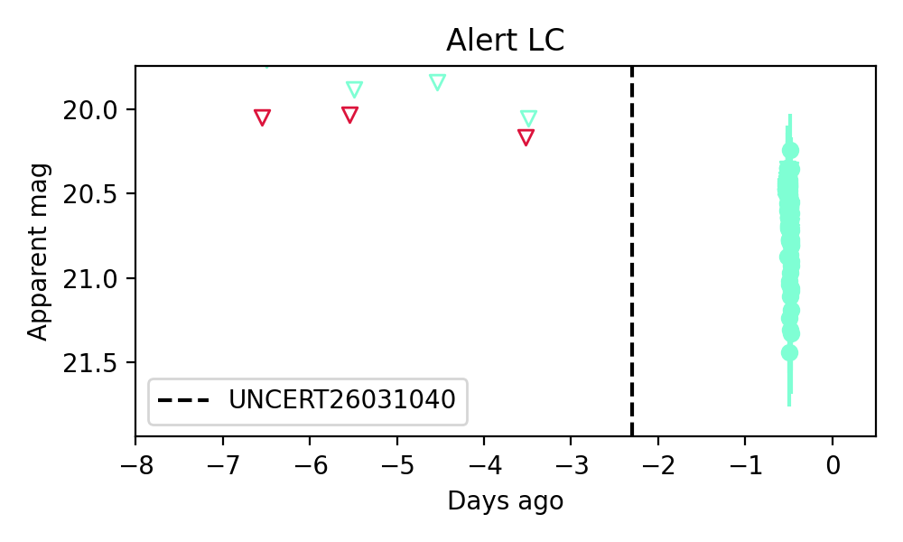
10. ZTF26aakmwgz (Afterglow?) [Back to Top] [Share] [Trigger Swift] [Fritz ] [Lasair ]RA, Dec: 127.62064, -2.15759 8h30m28.95s, -2d-9m-27.34sGalactic (l, b): 226.81946, 20.81357 ext(g-r) = 0.028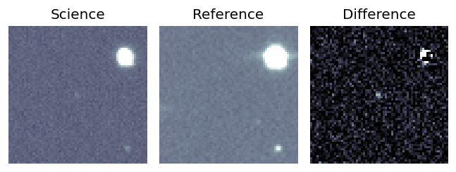
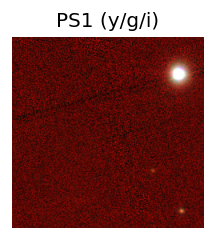
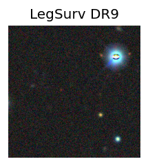
LegacySurvey: 1 sources in 3 arcsec Closest: d = 6.82 arcsec, 83.6 deg (east of north) photoz=0.93 (68% bounds 0.85, 1.05), type=PSF peak abs mag = -23.71 (68% bounds -23.45, -24.02) 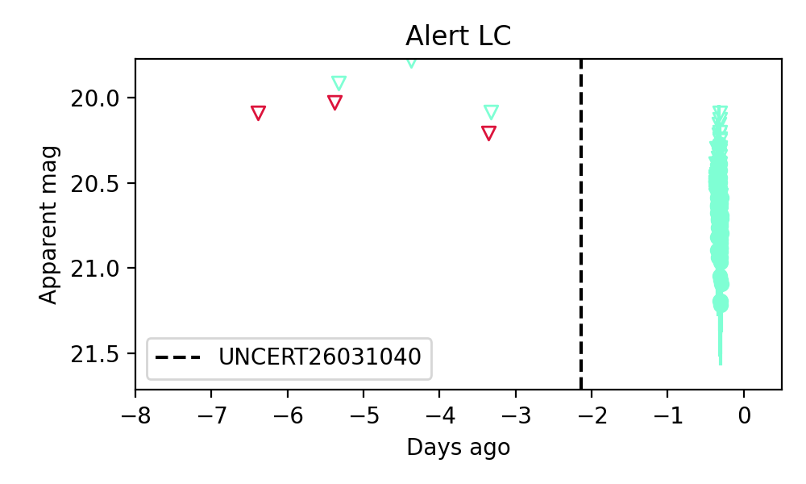
11. ZTF26aakmwkk (Afterglow?) [Back to Top] [Share] [Trigger Swift] [Fritz ] [Lasair ]RA, Dec: 127.90596, -1.70884 8h31m37.43s, -1d-42m-31.81sGalactic (l, b): 226.5569, 21.28543 ext(g-r) = 0.036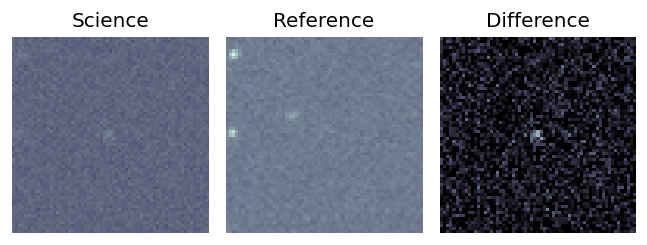
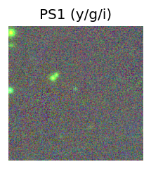
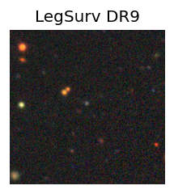
LegacySurvey: 1 sources in 3 arcsec Closest: d = 1.52 arcsec, 10.1 deg (east of north) photoz=0.49 (68% bounds 0.35, 0.62), type=REX peak abs mag = -22.05 (68% bounds -21.19, -22.69) 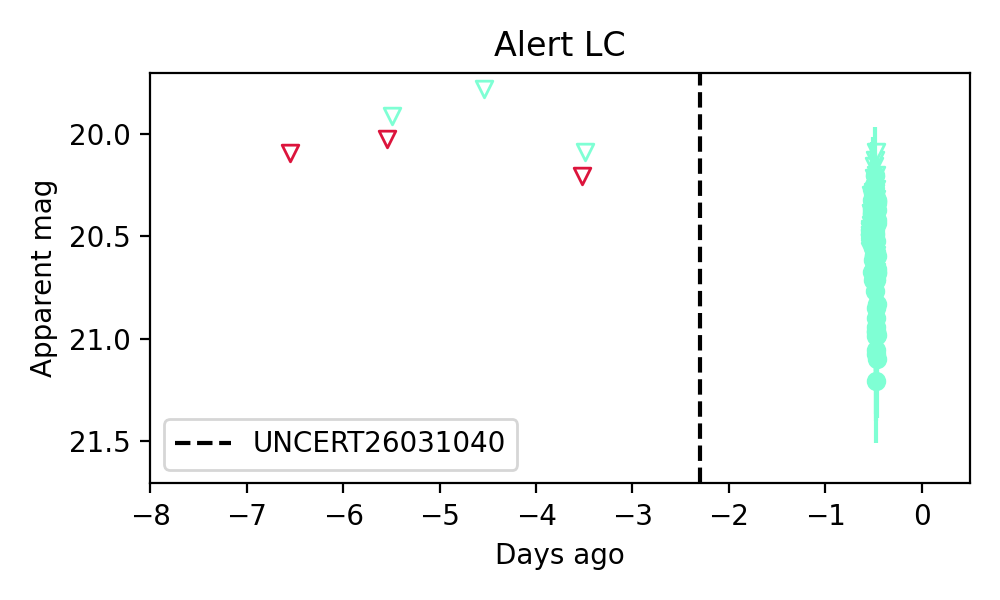
12. ZTF26aakpgxu (Afterglow?) [Back to Top] [Share] [Trigger Swift] [Fritz ] [Lasair ]RA, Dec: 170.30221, -16.34387 11h21m12.53s, -16d-20m-37.95sGalactic (l, b): 273.57857, 41.32836 ext(g-r) = 0.059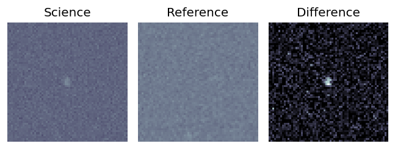
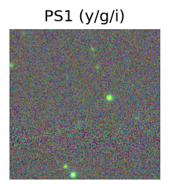
PS1: 1 source in 3 arcsec Closest: d = 9.85 arcsec photoz=0.66+/-0.21 peak abs mag = -23.77 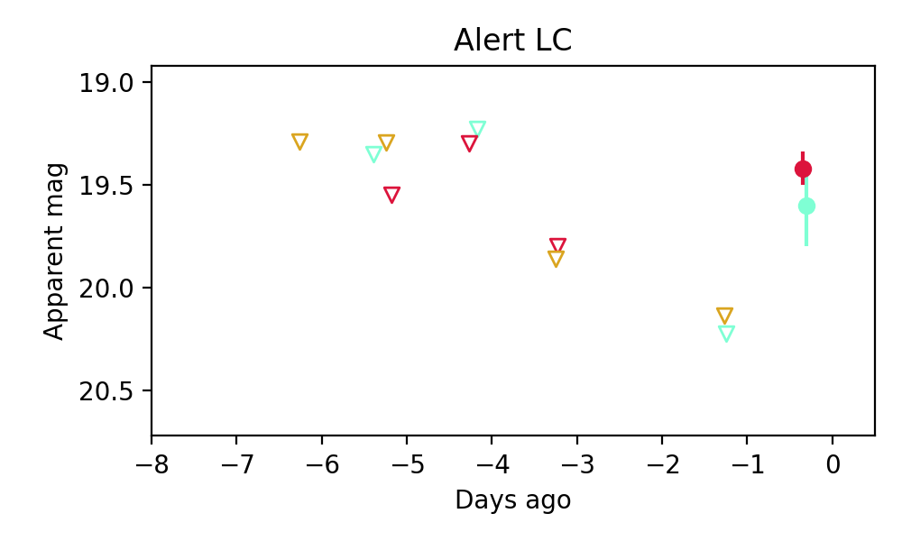
Consistent with synchrotron, g-r>0!
13. ZTF26aakpsot (FBOT?) [Back to Top] [Share] [Trigger Swift] [Fritz ] [Lasair ]RA, Dec: 143.279, 26.56952 9h33m6.96s, 26d34m10.27sGalactic (l, b): 201.82716, 46.05968 ext(g-r) = 0.021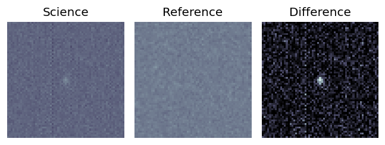
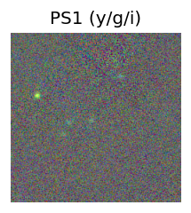
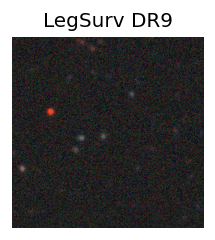
peak abs mag = -20.42 LegacySurvey: 1 sources in 3 arcsec Closest: d = 2.28 arcsec, 132.6 deg (east of north) photoz=0.4 (68% bounds 0.3, 0.52), type=DEV peak abs mag = -21.93 (68% bounds -21.18, -22.63) Consistent with synchrotron, g-r>0!
14. ZTF26aakptdc (FBOT?) [Back to Top] [Share] [Trigger Swift] [Fritz ] [Lasair ]RA, Dec: 129.67707, 5.22569 8h38m42.50s, 5d13m32.48sGalactic (l, b): 220.86234, 26.19204 ext(g-r) = 0.031peak abs mag = -22.02 LegacySurvey: 1 sources in 3 arcsec Closest: d = 0.47 arcsec, 253.5 deg (east of north) photoz=0.14 (68% bounds 0.11, 0.2), type=EXP peak abs mag = -19.15 (68% bounds -18.57, -20.02)
15. ZTF26aakptfw (Afterglow?FBOT?) [Back to Top] [Share] [Trigger Swift] [Fritz ] [Lasair ]RA, Dec: 134.80811, -2.15544 8h59m13.95s, -2d-9m-19.58sGalactic (l, b): 230.87588, 26.96601 ext(g-r) = 0.02LegacySurvey: 1 sources in 3 arcsec Closest: d = 0.88 arcsec, 83.7 deg (east of north) photoz=1.07 (68% bounds 0.96, 1.18), type=REX peak abs mag = -24.9 (68% bounds -24.59, -25.16) Consistent with synchrotron, g-r>0!
16. ZTF26aakpzkp (Afterglow?) [Back to Top] [Share] [Trigger Swift] [Fritz ] [Lasair ]RA, Dec: 171.656, 19.43007 11h26m37.44s, 19d25m48.27sGalactic (l, b): 230.01853, 69.09419 ext(g-r) = 0.02LegacySurvey: 1 sources in 3 arcsec Closest: d = 8.65 arcsec, 356.6 deg (east of north) photoz=1.08 (68% bounds 0.8, 1.55), type=REX peak abs mag = -24.24 (68% bounds -23.41, -25.19) Consistent with synchrotron, g-r>0!
17. ZTF26aakqkiw (Afterglow?) [Back to Top] [Share] [Trigger Swift] [Fritz ] [Lasair ]RA, Dec: 165.26228, 41.16191 11h 1m2.95s, 41d 9m42.89sGalactic (l, b): 174.01855, 63.37025 ext(g-r) = 0.01LegacySurvey: 1 sources in 3 arcsec Closest: d = 5.54 arcsec, 93.2 deg (east of north) photoz=0.8 (68% bounds 0.56, 1.02), type=EXP peak abs mag = -23.47 (68% bounds -22.51, -24.1) Consistent with synchrotron, g-r>0!
18. ZTF26aakqkjn (Afterglow?) [Back to Top] [Share] [Trigger Swift] [Fritz ] [Lasair ]RA, Dec: 164.57685, 62.58528 10h58m18.44s, 62d35m7.02sGalactic (l, b): 142.75632, 49.96327 ext(g-r) = 0.016PS1: 1 source in 3 arcsec Closest: d = 9.54 arcsec photoz=0.90+/-0.43 peak abs mag = -24.04 Consistent with synchrotron, g-r>0!
19. ZTF26aakqkjp (Afterglow?) [Back to Top] [Share] [Trigger Swift] [Fritz ] [Lasair ]RA, Dec: 164.50717, 62.42146 10h58m1.72s, 62d25m17.26sGalactic (l, b): 142.96155, 50.06564 ext(g-r) = 0.018LegacySurvey: 1 sources in 3 arcsec Closest: d = 6.39 arcsec, 211.6 deg (east of north) photoz=0.31 (68% bounds 0.2, 0.55), type=REX peak abs mag = -21.13 (68% bounds -20.04, -22.61) Consistent with synchrotron, g-r>0!
20. ZTF26aakqkko (Afterglow?) [Back to Top] [Share] [Trigger Swift] [Fritz ] [Lasair ]RA, Dec: 164.35773, 40.88903 10h57m25.86s, 40d53m20.53sGalactic (l, b): 175.1491, 62.84238 ext(g-r) = 0.014LegacySurvey: 1 sources in 3 arcsec Closest: d = 5.38 arcsec, 128.9 deg (east of north) photoz=0.87 (68% bounds 0.65, 1.06), type=EXP peak abs mag = -23.76 (68% bounds -22.97, -24.27) Consistent with synchrotron, g-r>0!
21. ZTF26aakqlpf (Afterglow?) [Back to Top] [Share] [Trigger Swift] [Fritz ] [Lasair ]RA, Dec: 165.94855, 62.61255 11h 3m47.65s, 62d36m45.17sGalactic (l, b): 141.97474, 50.34862 ext(g-r) = 0.011LegacySurvey: 1 sources in 3 arcsec Closest: d = 6.29 arcsec, 46.4 deg (east of north) photoz=0.86 (68% bounds 0.67, 1.04), type=PSF peak abs mag = -23.81 (68% bounds -23.15, -24.32) Consistent with synchrotron, g-r>0!
22. ZTF26aakqlpg (Afterglow?) [Back to Top] [Share] [Trigger Swift] [Fritz ] [Lasair ]RA, Dec: 166.24425, 62.73019 11h 4m58.62s, 62d43m48.68sGalactic (l, b): 141.69343, 50.34232 ext(g-r) = 0.012 Consistent with synchrotron, g-r>0!
23. ZTF26aakqnph (Afterglow?) [Back to Top] [Share] [Trigger Swift] [Fritz ] [Lasair ]RA, Dec: 157.55264, 5.2547 10h30m12.63s, 5d15m16.91sGalactic (l, b): 239.59876, 49.90695 WARNING: -3.85 deg from ecliptic plane ext(g-r) = 0.024LegacySurvey: 1 sources in 3 arcsec Closest: d = 5.51 arcsec, 295.1 deg (east of north) photoz=0.84 (68% bounds 0.44, 1.36), type=REX peak abs mag = -24.34 (68% bounds -22.62, -25.64) Consistent with synchrotron, g-r>0!
24. ZTF26aakquqx (Afterglow?) [Back to Top] [Share] [Trigger Swift] [Fritz ] [Lasair ]RA, Dec: 163.34059, -1.945 10h53m21.74s, -1d-56m-41.99sGalactic (l, b): 253.84645, 49.3356 ext(g-r) = 0.044LegacySurvey: 1 sources in 3 arcsec Closest: d = 6.95 arcsec, 299.9 deg (east of north) photoz=0.97 (68% bounds 0.82, 1.13), type=REX peak abs mag = -24.3 (68% bounds -23.84, -24.71) Consistent with synchrotron, g-r>0!
25. ZTF26aakquqz (Afterglow?) [Back to Top] [Share] [Trigger Swift] [Fritz ] [Lasair ]RA, Dec: 163.70237, -2.12493 10h54m48.57s, -2d-7m-29.75sGalactic (l, b): 254.44403, 49.44423 ext(g-r) = 0.043peak abs mag = -23.39 LegacySurvey: 1 sources in 3 arcsec Closest: d = 3.06 arcsec, 9.1 deg (east of north) photoz=0.41 (68% bounds 0.38, 0.46), type=REX peak abs mag = -22.27 (68% bounds -22.03, -22.53) Consistent with synchrotron, g-r>0!
26. ZTF26aakquyd (Afterglow?) [Back to Top] [Share] [Trigger Swift] [Fritz ] [Lasair ]RA, Dec: 162.67634, -2.2681 10h50m42.32s, -2d-16m-5.14sGalactic (l, b): 253.43257, 48.64911 ext(g-r) = 0.041LegacySurvey: 1 sources in 3 arcsec Closest: d = 2.76 arcsec, 282.2 deg (east of north) photoz=1.07 (68% bounds 0.61, 1.74), type=REX peak abs mag = -24.6 (68% bounds -23.14, -25.91) Consistent with synchrotron, g-r>0!
27. ZTF26aakrixo (Afterglow?) [Back to Top] [Share] [Trigger Swift] [Fritz ] [Lasair ]RA, Dec: 191.91248, 5.22299 12h47m39.00s, 5d13m22.78sGalactic (l, b): 300.40543, 68.07616 ext(g-r) = 0.027LegacySurvey: 1 sources in 3 arcsec Closest: d = 2.68 arcsec, 0.5 deg (east of north) photoz=1.08 (68% bounds 0.93, 1.25), type=REX peak abs mag = -24.57 (68% bounds -24.16, -24.97) Consistent with synchrotron, g-r>0!
28. ZTF26aaksrha (Afterglow?) [Back to Top] [Share] [Trigger Swift] [Fritz ] [Lasair ]RA, Dec: 208.79322, 41.14919 13h55m10.37s, 41d 8m57.07sGalactic (l, b): 83.95315, 70.8145 ext(g-r) = 0.005 Consistent with synchrotron, g-r>0!
29. ZTF26aaksrhb (Afterglow?) [Back to Top] [Share] [Trigger Swift] [Fritz ] [Lasair ]RA, Dec: 209.0348, 40.83753 13h56m8.35s, 40d50m15.11sGalactic (l, b): 82.8729, 70.88373 ext(g-r) = 0.007 Consistent with synchrotron, g-r>0!
30. ZTF26aaktcow (FBOT?) [Back to Top] [Share] [Trigger Swift] [Fritz ] [Lasair ]RA, Dec: 263.64963, 12.66772 17h34m35.91s, 12d40m3.79sGalactic (l, b): 35.96333, 22.68717 ext(g-r) = 0.188LegacySurvey: 1 sources in 3 arcsec Closest: d = 3.66 arcsec, 306.6 deg (east of north) photoz=0.14 (68% bounds 0.06, 0.18), type=PSF peak abs mag = -19.57 (68% bounds -17.46, -20.06)
Section 2: Older Sources Observed Last Night (28)
0. ZTF26aajnagb (FBOT?) [Back to Top] [Share] [Trigger Swift] [Fritz ] [Lasair ]RA, Dec: 141.35741, 55.59467 9h25m25.78s, 55d35m40.81sGalactic (l, b): 160.5476, 43.57091 ext(g-r) = 0.026peak abs mag = -23.34 LegacySurvey: 1 sources in 3 arcsec Closest: d = 0.33 arcsec, 298.6 deg (east of north) photoz=0.17 (68% bounds 0.08, 0.24), type=EXP peak abs mag = -21.82 (68% bounds -20.02, -22.59)
1. ZTF26aajwtey (FBOT?) [Back to Top] [Share] [Trigger Swift] [Fritz ] [Lasair ]RA, Dec: 136.00543, 23.23738 9h 4m1.30s, 23d14m14.58sGalactic (l, b): 203.91825, 38.83287 ext(g-r) = 0.034peak abs mag = -19.09 LegacySurvey: 1 sources in 3 arcsec Closest: d = 1.45 arcsec, 317.0 deg (east of north) photoz=0.14 (68% bounds 0.12, 0.17), type=SER peak abs mag = -19.76 (68% bounds -19.31, -20.11)
2. ZTF26aajwxxj (FBOT?) [Back to Top] [Share] [Trigger Swift] [Fritz ] [Lasair ]RA, Dec: 141.91318, 33.68952 9h27m39.16s, 33d41m22.27sGalactic (l, b): 191.42377, 46.01271 ext(g-r) = 0.019peak abs mag = -21.07 LegacySurvey: 1 sources in 3 arcsec Closest: d = 0.53 arcsec, 202.6 deg (east of north) photoz=0.12 (68% bounds 0.09, 0.16), type=REX peak abs mag = -20.64 (68% bounds -19.91, -21.32)
3. ZTF26aakbgha (Afterglow?) [Back to Top] [Share] [Trigger Swift] [Fritz ] [Lasair ]RA, Dec: 46.66584, 35.7763 3h 6m39.80s, 35d46m34.66sGalactic (l, b): 151.53854, -19.47476 ext(g-r) = 0.276PS1: 1 source in 3 arcsec Closest: d = 5.96 arcsec photoz=0.55+/-0.19 peak abs mag = -25.10
4. ZTF26aakjamd (FBOT?) [Back to Top] [Share] [Trigger Swift] [Fritz ] [Lasair ]RA, Dec: 196.50796, -15.83747 13h 6m1.91s, -15d-50m-14.90sGalactic (l, b): 308.07126, 46.88859 ext(g-r) = 0.066PS1: 1 source in 3 arcsec Closest: d = 1.68 arcsec photoz=0.05+/-0.03 peak abs mag = -20.34
5. ZTF26aakklhy (Afterglow?) [Back to Top] [Share] [Trigger Swift] [Fritz ] [Lasair ]RA, Dec: 260.52731, 8.68076 17h22m6.55s, 8d40m50.72sGalactic (l, b): 30.61773, 23.77342 ext(g-r) = 0.14LegacySurvey: 1 sources in 3 arcsec Closest: d = 3.30 arcsec, 208.1 deg (east of north) photoz=0.18 (68% bounds 0.11, 0.28), type=EXP peak abs mag = -20.19 (68% bounds -19.02, -21.29)
6. ZTF26aakklmx (Afterglow?) [Back to Top] [Share] [Trigger Swift] [Fritz ] [Lasair ]RA, Dec: 274.04027, 65.61609 18h16m9.67s, 65d36m57.93sGalactic (l, b): 95.37312, 28.14102 ext(g-r) = 0.045peak abs mag = -18.34 LegacySurvey: 1 sources in 3 arcsec Closest: d = 3.14 arcsec, 227.3 deg (east of north) photoz=0.04 (68% bounds 0.03, 0.05), type=SER peak abs mag = -17.61 (68% bounds -17.08, -17.93) Consistent with synchrotron, g-r>0!
7. ZTF26aakkpot (FBOT?) [Back to Top] [Share] [Trigger Swift] [Fritz ] [Lasair ]RA, Dec: 247.70018, 12.64631 16h30m48.04s, 12d38m46.72sGalactic (l, b): 28.5333, 36.86254 ext(g-r) = 0.065peak abs mag = -19.50 LegacySurvey: 1 sources in 3 arcsec Closest: d = 0.46 arcsec, 230.3 deg (east of north) photoz=0.12 (68% bounds 0.1, 0.16), type=SER peak abs mag = -19.53 (68% bounds -19.07, -20.12) Consistent with synchrotron, g-r>0!
8. ZTF26aakksku (Afterglow?) [Back to Top] [Share] [Trigger Swift] [Fritz ] [Lasair ]RA, Dec: 297.01504, 9.04695 19h48m3.61s, 9d 2m49.02sGalactic (l, b): 47.5679, -8.23556 ext(g-r) = 0.252PS1: 1 source in 3 arcsec Closest: d = 4.26 arcsec photoz=0.42+/-0.14 peak abs mag = -23.57
9. ZTF26aakljeu (Afterglow?) [Back to Top] [Share] [Trigger Swift] [Fritz ] [Lasair ]RA, Dec: 109.62077, 4.38699 7h18m28.98s, 4d23m13.16sGalactic (l, b): 212.09, 8.01043 ext(g-r) = 0.312
10. ZTF26aaklksw (Afterglow?) [Back to Top] [Share] [Trigger Swift] [Fritz ] [Lasair ]RA, Dec: 107.0882, 4.82034 7h 8m21.17s, 4d49m13.21sGalactic (l, b): 210.5531, 5.9529 ext(g-r) = 0.297
11. ZTF26aaklltb (Afterglow?) [Back to Top] [Share] [Trigger Swift] [Fritz ] [Lasair ]RA, Dec: 94.12938, 10.72791 6h16m31.05s, 10d43m40.48sGalactic (l, b): 199.4031, -2.7422 ext(g-r) = 0.687
12. ZTF26aakllte (Afterglow?) [Back to Top] [Share] [Trigger Swift] [Fritz ] [Lasair ]RA, Dec: 93.62375, 10.69575 6h14m29.70s, 10d41m44.70sGalactic (l, b): 199.19538, -3.1948 ext(g-r) = 0.801
13. ZTF26aaklnad (Afterglow?) [Back to Top] [Share] [Trigger Swift] [Fritz ] [Lasair ]RA, Dec: 93.41836, 12.45762 6h13m40.41s, 12d27m27.43sGalactic (l, b): 197.54829, -2.53258 ext(g-r) = 1.086
14. ZTF26aakmhjn (FBOT?) [Back to Top] [Share] [Trigger Swift] [Fritz ] [Lasair ]RA, Dec: 127.26873, -4.28709 8h29m4.50s, -4d-17m-13.54sGalactic (l, b): 228.58469, 19.43111 ext(g-r) = 0.043LegacySurvey: 1 sources in 3 arcsec Closest: d = 0.17 arcsec, 314.5 deg (east of north) photoz=0.57 (68% bounds 0.53, 0.61), type=EXP peak abs mag = -24.41 (68% bounds -24.21, -24.58)
15. ZTF26aakngda (Afterglow?) [Back to Top] [Share] [Trigger Swift] [Fritz ] [Lasair ]RA, Dec: 125.58171, 27.50735 8h22m19.61s, 27d30m26.44sGalactic (l, b): 195.63071, 31.03151 ext(g-r) = 0.033LegacySurvey: 1 sources in 3 arcsec Closest: d = 3.15 arcsec, 247.9 deg (east of north) photoz=1.0 (68% bounds 0.87, 1.17), type=REX peak abs mag = -26.45 (68% bounds -26.08, -26.86)
16. ZTF26aaknkgh (Afterglow?) [Back to Top] [Share] [Trigger Swift] [Fritz ] [Lasair ]RA, Dec: 122.88983, 19.16788 8h11m33.56s, 19d10m4.37sGalactic (l, b): 203.67149, 25.95425 WARNING: -0.82 deg from ecliptic plane ext(g-r) = 0.043LegacySurvey: 1 sources in 3 arcsec Closest: d = 8.36 arcsec, 216.1 deg (east of north) photoz=0.83 (68% bounds 0.68, 0.91), type=PSF peak abs mag = -27.28 (68% bounds -26.76, -27.54)
17. ZTF26aaknkgt (Afterglow?) [Back to Top] [Share] [Trigger Swift] [Fritz ] [Lasair ]RA, Dec: 122.83266, 19.07485 8h11m19.84s, 19d 4m29.48sGalactic (l, b): 203.74555, 25.86978 WARNING: -0.92 deg from ecliptic plane ext(g-r) = 0.045LegacySurvey: 1 sources in 3 arcsec Closest: d = 7.11 arcsec, 304.5 deg (east of north) photoz=1.16 (68% bounds 0.64, 1.49), type=REX peak abs mag = -25.59 (68% bounds -24.02, -26.26)
18. ZTF26aaknmgm (FBOT?) [Back to Top] [Share] [Trigger Swift] [Fritz ] [Lasair ]RA, Dec: 141.48398, 10.95501 9h25m56.16s, 10d57m18.03sGalactic (l, b): 221.11612, 39.20325 WARNING: -3.95 deg from ecliptic plane ext(g-r) = 0.035LegacySurvey: 1 sources in 3 arcsec Closest: d = 1.21 arcsec, 338.9 deg (east of north) photoz=0.98 (68% bounds 0.88, 1.13), type=REX peak abs mag = -24.87 (68% bounds -24.56, -25.24)
19. ZTF26aakoanc (Afterglow?) [Back to Top] [Share] [Trigger Swift] [Fritz ] [Lasair ]RA, Dec: 113.05855, 26.68155 7h32m14.05s, 26d40m53.59sGalactic (l, b): 192.50647, 20.21595 WARNING: 4.87 deg from ecliptic plane ext(g-r) = 0.059LegacySurvey: 1 sources in 3 arcsec Closest: d = 4.52 arcsec, 166.1 deg (east of north) photoz=0.51 (68% bounds 0.41, 0.68), type=PSF peak abs mag = -22.5 (68% bounds -21.93, -23.22)
20. ZTF26aakogxz (FBOT?) [Back to Top] [Share] [Trigger Swift] [Fritz ] [Lasair ]RA, Dec: 142.01557, 12.12884 9h28m3.74s, 12d 7m43.81sGalactic (l, b): 220.03731, 40.1831 WARNING: -2.67 deg from ecliptic plane ext(g-r) = 0.033LegacySurvey: 1 sources in 3 arcsec Closest: d = 0.97 arcsec, 239.0 deg (east of north) photoz=0.95 (68% bounds 0.52, 1.37), type=REX peak abs mag = -23.59 (68% bounds -21.98, -24.58)
21. ZTF26aakotnx (Afterglow?) [Back to Top] [Share] [Trigger Swift] [Fritz ] [Lasair ]RA, Dec: 158.20697, 26.95148 10h32m49.67s, 26d57m5.33sGalactic (l, b): 205.17792, 59.23488 ext(g-r) = 0.024LegacySurvey: 1 sources in 3 arcsec Closest: d = 9.14 arcsec, 120.6 deg (east of north) photoz=0.39 (68% bounds 0.29, 0.51), type=PSF peak abs mag = -22.71 (68% bounds -21.98, -23.39)
22. ZTF26aakourq (FBOT?) [Back to Top] [Share] [Trigger Swift] [Fritz ] [Lasair ]RA, Dec: 155.01673, 69.72643 10h20m4.02s, 69d43m35.13sGalactic (l, b): 139.59817, 42.16476 ext(g-r) = 0.053peak abs mag = -21.80 LegacySurvey: 1 sources in 3 arcsec Closest: d = 0.05 arcsec, 124.6 deg (east of north) photoz=0.13 (68% bounds 0.08, 0.39), type=REX peak abs mag = -19.09 (68% bounds -17.92, -21.74) Consistent with synchrotron, g-r>0!
23. ZTF26aakpvws (Afterglow?) [Back to Top] [Share] [Trigger Swift] [Fritz ] [Lasair ]RA, Dec: 177.91449, 70.28474 11h51m39.48s, 70d17m5.06sGalactic (l, b): 130.12643, 45.9994 ext(g-r) = 0.018peak abs mag = -24.45 LegacySurvey: 1 sources in 3 arcsec Closest: d = 3.17 arcsec, 172.9 deg (east of north) photoz=1.0 (68% bounds 0.87, 1.17), type=REX peak abs mag = -24.43 (68% bounds -24.05, -24.84)
24. ZTF26aakpxiu (FBOT?) [Back to Top] [Share] [Trigger Swift] [Fritz ] [Lasair ]RA, Dec: 126.94346, 47.3253 8h27m46.43s, 47d19m31.08sGalactic (l, b): 172.4494, 35.55071 ext(g-r) = 0.039LegacySurvey: 1 sources in 3 arcsec Closest: d = 1.06 arcsec, 63.8 deg (east of north) photoz=1.03 (68% bounds 0.58, 1.31), type=REX peak abs mag = -24.28 (68% bounds -22.73, -24.92) Consistent with synchrotron, g-r>0!
25. ZTF26aakqats (FBOT?) [Back to Top] [Share] [Trigger Swift] [Fritz ] [Lasair ]RA, Dec: 172.28842, 23.29363 11h29m9.22s, 23d17m37.07sGalactic (l, b): 220.02736, 71.02113 ext(g-r) = 0.017peak abs mag = -21.37 LegacySurvey: 1 sources in 3 arcsec Closest: d = 2.05 arcsec, 84.0 deg (east of north) photoz=0.09 (68% bounds 0.05, 0.13), type=SER peak abs mag = -17.81 (68% bounds -16.52, -18.8)
26. ZTF26aakqjou (Afterglow?) [Back to Top] [Share] [Trigger Swift] [Fritz ] [Lasair ]RA, Dec: 157.79037, 26.29321 10h31m9.69s, 26d17m35.57sGalactic (l, b): 206.32753, 58.76428 ext(g-r) = 0.02LegacySurvey: 1 sources in 3 arcsec Closest: d = 5.29 arcsec, 182.6 deg (east of north) photoz=0.72 (68% bounds 0.45, 1.02), type=REX peak abs mag = -23.55 (68% bounds -22.33, -24.49)
27. ZTF26aakswpm (Afterglow?) [Back to Top] [Share] [Trigger Swift] [Fritz ] [Lasair ]RA, Dec: 263.44085, 12.60067 17h33m45.80s, 12d36m2.42sGalactic (l, b): 35.80592, 22.84507 ext(g-r) = 0.159LegacySurvey: 1 sources in 3 arcsec Closest: d = 7.81 arcsec, 80.9 deg (east of north) photoz=1.04 (68% bounds 0.74, 1.59), type=EXP peak abs mag = -26.8 (68% bounds -25.88, -27.93)